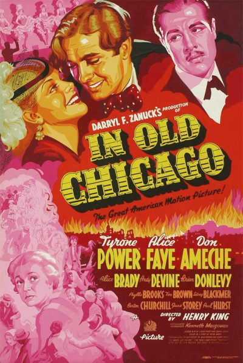

In Old Chicago
Starring: Alice Brady, Alice Faye, Tyrone Power
Director: Henry King, Robert D. Webb
Writer: Sonya Levien, Lamar Trotti, Niven Busch
Producer: Darryl F. Zanuck, Kenneth Macgowan
In Old Chicago is a 1938 American disaster musical drama film directed by Henry King. The screenplay by Sonya Levien and Lamar Trotti was based on the Niven Busch story, "We the O'Learys". The film is a fictionalized account about the Great Chicago Fire of 1871 and stars Alice Brady as Mrs. O'Leary, the owner of the cow that started the fire, with Tyrone Power and Don Ameche as her sons.
Trivia
- Won the Academy Award for Best Supporting Actress.
- Also nominated for: Academy Award for Best Picture; Academy Award for Best Story; Academy Award for Best Score, Adaptation or Treatment; Academy Award for Best Sound.
- During preproduction, MGM had announced that Jean Harlow, who was under contract to that studio, would be lent to 20th Century Fox to star in the role of Belle Fawcett.
- Harlow's untimely death caused the part to go to Alice Faye.
- Faye's popularity skyrocketed as a result of the picture, and she was reunited with Power and Ameche that same year for Alexander's Ragtime Band, which proved to be even more successful.
Filming Locations
- Chicago
Previous Showings
3 Runs • 1 Festival
Original Billings: 1 run (April 2, 1938)
Original Run: April 2, 1938 (Saturday - Wednesday)
All runs on record (3):
- April 2, 1938 (Saturday - Wednesday)Tyrone Power, Alice Faye
- October 8 - 9, 1992w/ On the Avenue
- October 11 - 12, 200620th Century-Fox Film Festivalw/ Ladies in Love